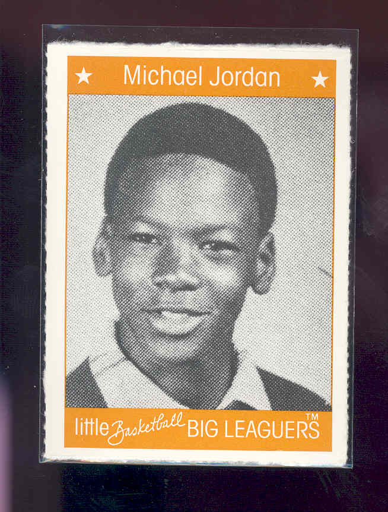

Early Years :
Jordan was born in Brooklyn, New York, to Deloris (née Peoples), who worked in banking, and James R. Jordan, Sr., an equipment supervisor. His family moved to Wilmington, North Carolina, when he was a toddler.
Jordan is the fourth of five children. He has two older brothers, Larry Jordan and James R. Jordan, Jr., one older sister, Deloris, and a younger sister, Roslyn. Jordan's brother James retired in 2006 as the Command Sergeant Major of the 35th Signal Brigade of the XVIII Airborne Corps in the U.S. Army. |
 |